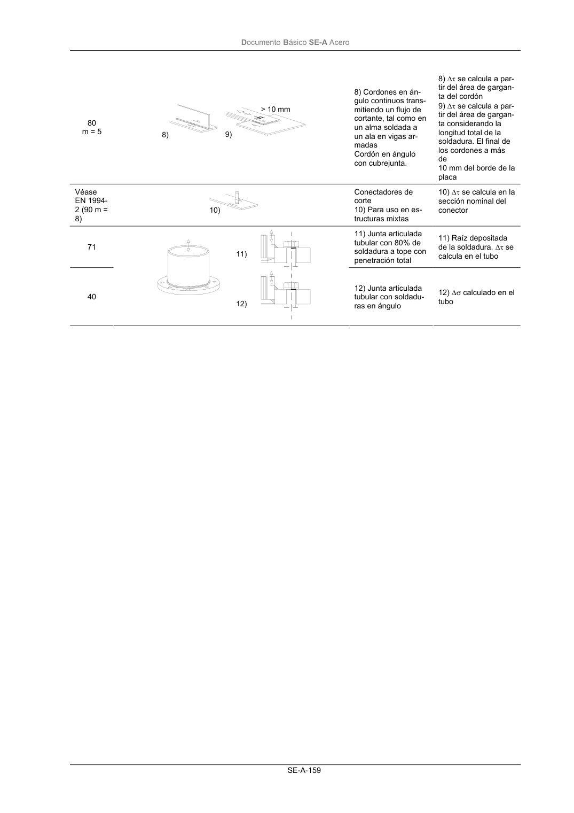

DB-SE-A Acero · edición 2007-10-23 · capa oficial
Documento DB-SE-A-oficial · SHA-256 del PDF 9ed9ea694aabfbda3bfbbef40dfe9223fde05d13c35bc2ba9751e5a96a22a64f
Página física 161 de 168.
Copia fiel del PDF fuente · Fuente oficial
Ficha de la disposición en la fuente oficial
Formato: Texto de la página (Markdown)
Documento Básico SE-A Acero SE-A-159 80 m = 5 8) Cordones en án- gulo continuos trans- mitiendo un flujo de cortante, tal como en un alma soldada a un ala en vigas ar- madas Cordón en ángulo con cubrejunta. 8) ∆τ se calcula a par- tir del área de gargan- ta del cordón 9) ∆τ se calcula a par- tir del área de gargan- ta considerando la longitud total de la soldadura. El final de los cordones a más de 10 mm del borde de la placa Véase EN 1994- 2 (90 m = 8) Conectadores de corte 10) Para uso en es- tructuras mixtas 10) ∆τ se calcula en la sección nominal del conector 71 11) Junta articulada tubular con 80% de soldadura a tope con penetración total 11) Raíz depositada de la soldadura. ∆τ se calcula en el tubo 40 12) Junta articulada tubular con soldadu- ras en ángulo 12) ∆σ calculado en el tubo
